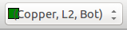
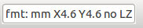

Reference manual
Copyright
This document is Copyright © 2010-2015 by it’s contributors as listed below. You may distribute it and/or modify it under the terms of either the GNU General Public License (http://www.gnu.org/licenses/gpl.html), version 3 or later, or the Creative Commons Attribution License (http://creativecommons.org/licenses/by/3.0/), version 3.0 or later.
All trademarks within this guide belong to their legitimate owners.
Contributors
The KiCad Team.
Feedback
Please direct any bug reports, suggestions or new versions to here:
-
About KiCad document: https://github.com/KiCad/kicad-doc/issues
-
About KiCad software: https://bugs.launchpad.net/kicad
-
About KiCad software i18n: https://github.com/KiCad/kicad-i18n/issues
Publication date and software version
Published on February 14, 2015.
1. Introduction to GerbView
GerbView is a Gerber file viewer (RS 274 X format), and is also able to display drill files from Pcbnew (in Excellon format).
It accepts up to 32 files (Gerber and/or Drill files)
Files can be displayed using a transparency mode or stacked mode.
For more information about the Gerber file format please have a read at the specification in The Gerber File Format Specification - Ucamco.
2. Main Screen

3. Top toolbar

|
Clear all layers |
|
Load Gerber files |
|
Load drill files (Excellon format from Pcbnew) |
|
Set page size for printing and show/hide page limits |
|
Open print dialog |
|
Zoom in and out |
|
Refresh screen |
|
Zoom fit in page |
 |
Layer selection |
|
D Code selection (hight light items that use this dcode) |
 |
Info about Gerber file options loaded in the current layer |

4. Left toolbar
|
|
Grid on / off |
|
Display polar coordinates on / off |
|
|
Units selection to display coordinates |
|
|
On grid cursor shape selection |
|
|
Display mode selection (solid or outlines) for flashed items |
|
|
Display mode selection (solid or outlines) for lines |
|
|
Display mode selection (solid or outlines) for polygons |
|
|
Show negative objects in ghost color |
|
|
Show / hide D Codes values (for items using a dcode) |
|
|
Mode used by Gerbview to show layers. |

5. Commands in menu bar
5.1. File menu

It is possible to load gerber and drill files into Gerbview. There is also an auxiliary option to export gerbers to pcbnew. Previously (a long time ago) it was also possible to load so called Dcodes, but those are now obsolete and is therefore not possible anymore.
5.1.1. Export to Pcbnew
GerbView has a limited capability to export Gerber files to Pcbnew.
The final result depends on what features of RS 274 X format are used in Gerber Files.
RS 274 X format has raster oriented features that cannot be converted (mainly all features relative to negative objects).
Flashed items are converted to vias.
Lines items are converted to track segments (or graphic lines for non copper layers)
So the usability of the converted file is very dependent upon the way each Gerber file was built by the original Pcb tool.
5.2. Preferences menu

Gives access to the hot keys editor, and some options to display items.
5.3. Miscellaneous menu
-
List Dcodes shows the Dcodes in use and some of Dcode parameters.
-
Show Source displays the Gerber file contents of the active layer in a text editor.
-
Clear Layer erases the contents of the active layer.
6. Layer Manager
The layer manager has 2 purposes:
-
Select the active layer
-
Show/hide layers
The active layer is drawn after the other layers.
When loading a new file, the active layer is used (the new data replace the previous data)
Note:
-
Mouse left click on a line: select the active layer
-
Mouse right click on the layer manager: show/hide all layers
-
Mouse middle click on a icon: select the layer color.
6.1. Modes to show Gerber layers
-
Raw mode

Each gerber file and each item in files are drawn in the order files are loaded.
However the active layer is draw last.
When Gerber files have negative items (drawn in black) artefacts are visible on already drawn layers

-
Stacked mode
Each gerber file is drawn in the order files are loaded.
The active layer is draw last.
When Gerber files have negative items (drawn in black) there are no artefacts on already drawn layers, because this mode draws each file in a local buffer before it is shown on screen. Negative items do not create artefacts.
-
Transparency mode


6.2. Effect of layer selection for drawings
This effect is visible only in raw or stacked mode.
The layer 1 (green layer) is drawn after the layer 2
The layer 2 (blue layer) is drawn after the layer 1

7. Print layers
7.1. Print dialog access
To print layers, use the
 tool, or the main menu (files)
tool, or the main menu (files)
|
Caution
|
But be sure items are inside the printable area (select by
Do not forget photoplotters can use a large plottable area, much bigger than the page sizes used by printers) Moving (by block move command) the entire layers is often needed. |
7.2. Move block command
You can move items by selecting them (drag the mouse with left button down) and then moving the selected area on screen.
Click the left button to finally place the area you are moving.